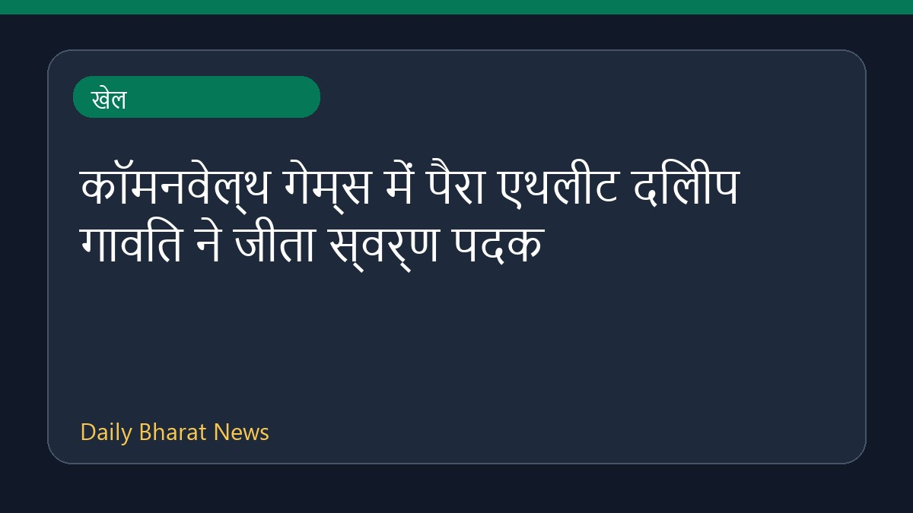

कॉमनवेल्थ गेम्स में पैरा एथलीट दिलीप गावित ने जीता स्वर्ण पदक

कॉमनवेल्थ गेम्स में भारत के पैरा एथलीट दिलीप महादु गावित ने पुरुषों की 100 मीटर टी47 स्पर्धा में स्वर्ण पदक हासिल किया है। इसी स्पर्धा में मोहम्मद बासिल मोर्सिंगानकाथ ने रजत पदक जीतकर देश के लिए ऐतिहासिक 1-2 फिनिश दर्ज की। दिलीप गावित ने अपनी इस शानदार सफलता का श्रेय और स्वर्ण पदक अपने कोच वैजनाथ काले को समर्पित किया है। इस प्रतियोगिता में कई अन्य उल्लेखनीय प्रदर्शन और खेल जगत की खबरें भी सामने आई हैं।
मूल स्रोत: Sports News Sources
Para athlete Dilip Gavit wins gold, Mohammed Basil Morssinganakath claims silver at Commonwealth Games - News On AIR ↗
Para athlete Dilip Gavit wins gold, Mohammed Basil Morssinganakath claims silver at Commonwealth Games - News On AIR ↗